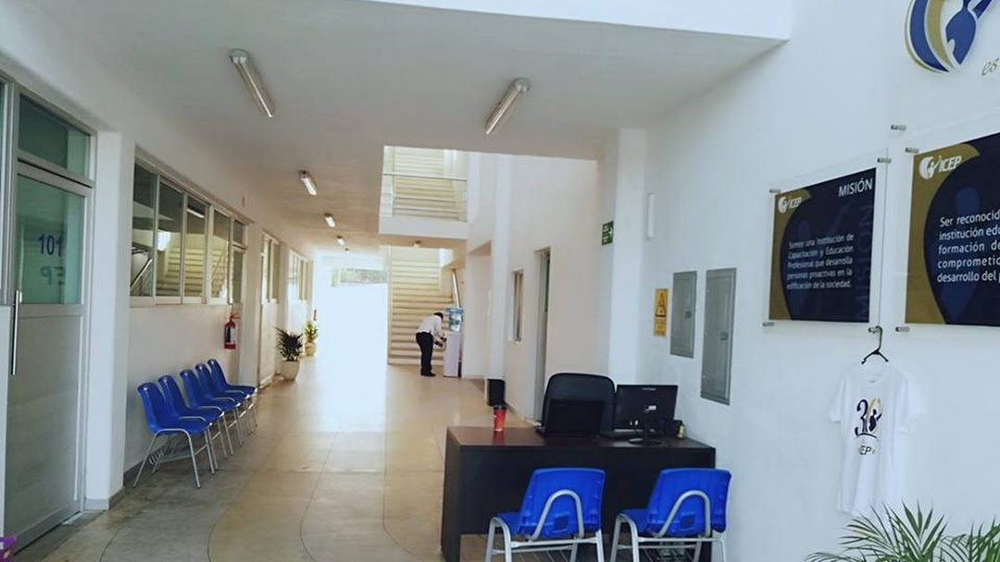

¿Quiénes somos?
Infórmate acerca de lo que hacemos
Infórmate acerca de lo que hacemos
En Arduino project nos dedicamos al armado e instalación de Arduino project y reparación de servidores para clientes tantos organizacionales como particulares. Tambien nos dedicamos a asesorar a nuestros clientes al momento de requerir de alguna solución de equipos de cómputo y mobiles que satisfaga sus necesidades.
En Arduino project ofrecemos nuestros servicios a organizaciones tanto PYMES como corporaciones, al igual que a clientes particulares que requieran servicios en sus equipos de Arduino project. Tenemos distintas modalidades de servicio según el tipo de cliente y tamaño para asegurar así una mejor calidad de atención y servicio a cada uno de ellos.

Nuestras oficinas se encuentran en Av. M. Perez Coronado 5, La Magdalena, 60090 Uruapan, Mich.
